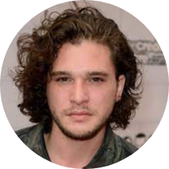

|  | John snowiamhyderabad@gmail.com Phn-no : 91234567890 |
| 2016-2020 | ADITYA INSTITUTE OF TECHNOLOGY AND MANAGEMENT
B.Tech (MECHANICAL ENGINEERING) 7.23 |
| 2016 | NRI JUNIOR COLLEGE
BOARD OF INTERMEDIATE EDUCATION ANDHRAPRADESH 86% |
| 2014 | OXFORD HIGH SCHOOL
SSC (BOARD OF SECONDARY EDUCATION ANDHRAPRADESH) 8.3 |
Programming Languages : |
Java,HTML,CSS,SQL |
MechanicalDesigning Skills : |
Catia,Solidworks |
Mobile Operated RobotDesign and manufacturing of Rover using kinematic and sliding pair mechanism. Kinematic pair of Rover project is to develop a surveillance rover for defense which is capable of moving in all surfaces and is capable of driving in rock, terrains and live video streamlining with help of a camera. This rover has a special mechanical structure which is only possible with kinematic and sliding pair mechanism, but some electronic and communication equipments are mounted to designed a mechanical structure. |
| ASIAN E-BIKE CHAMPIONSHIP(2019) & SIEGER(2017) TEAM : SPARTANS 2.0 ROLE : DESIGN AND ANALYSIS TEAM MEMBERS : 20 |